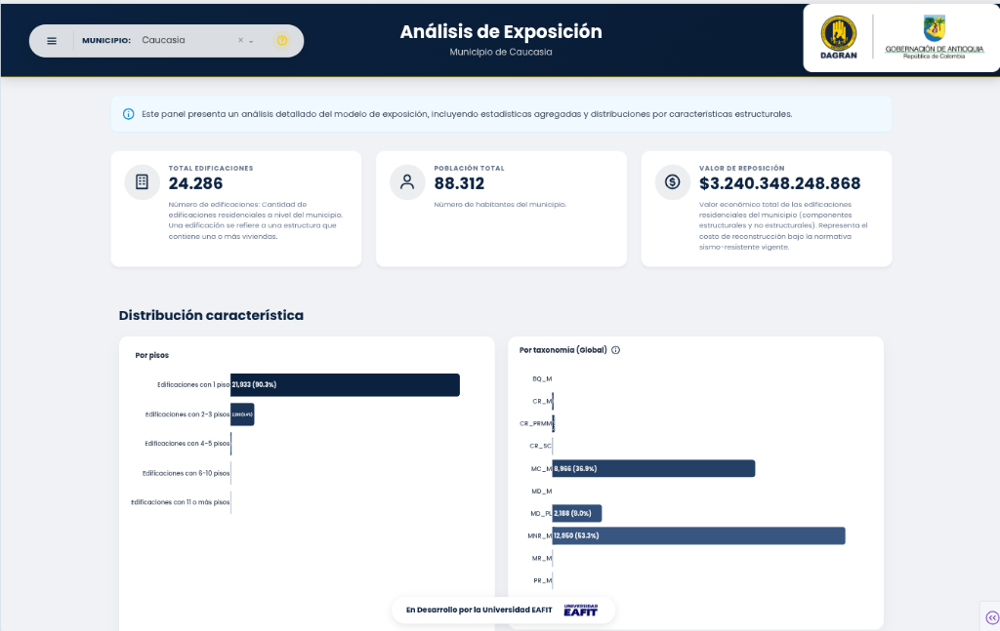
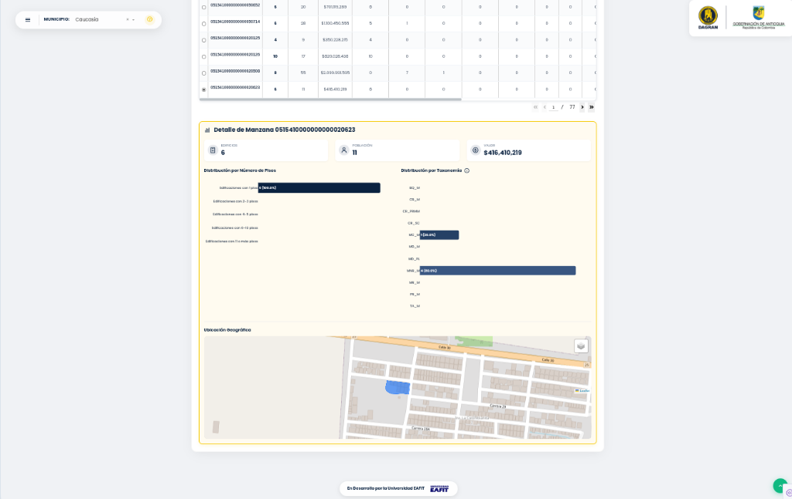
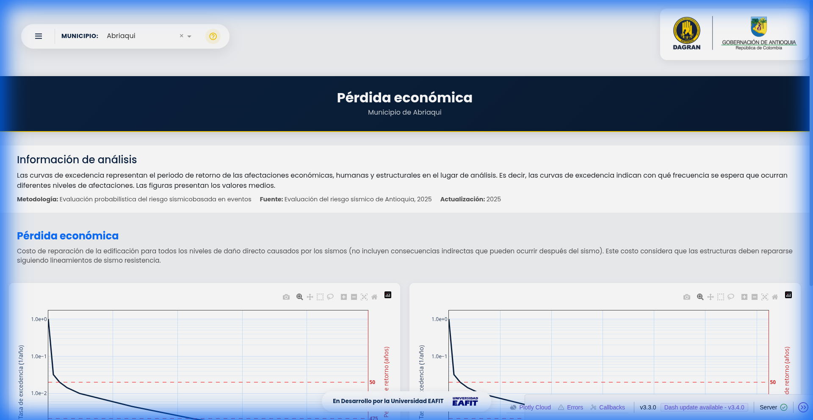
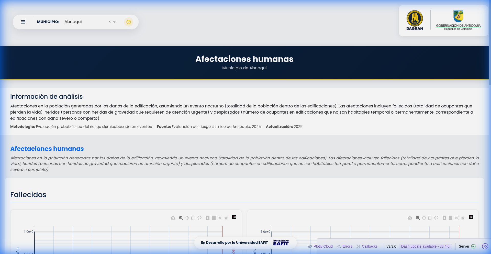
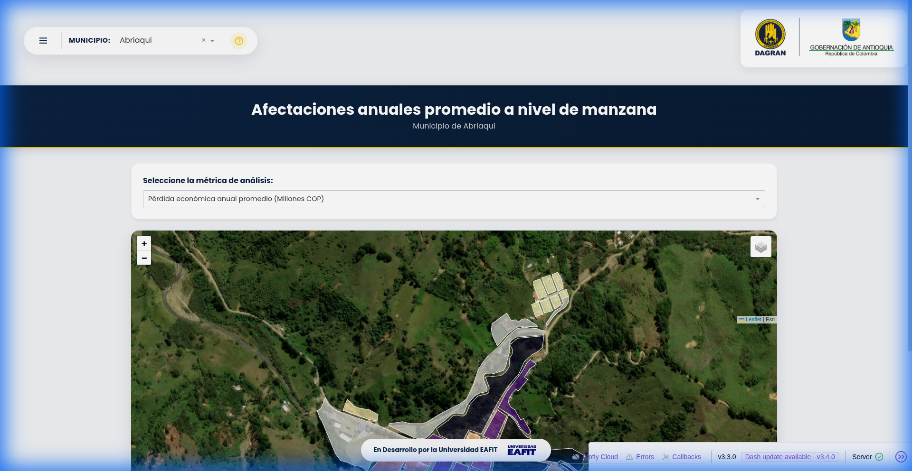
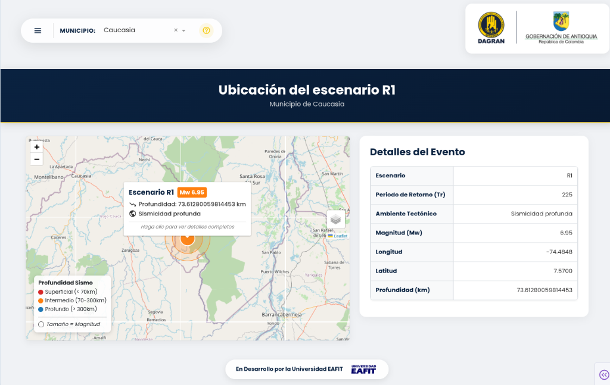
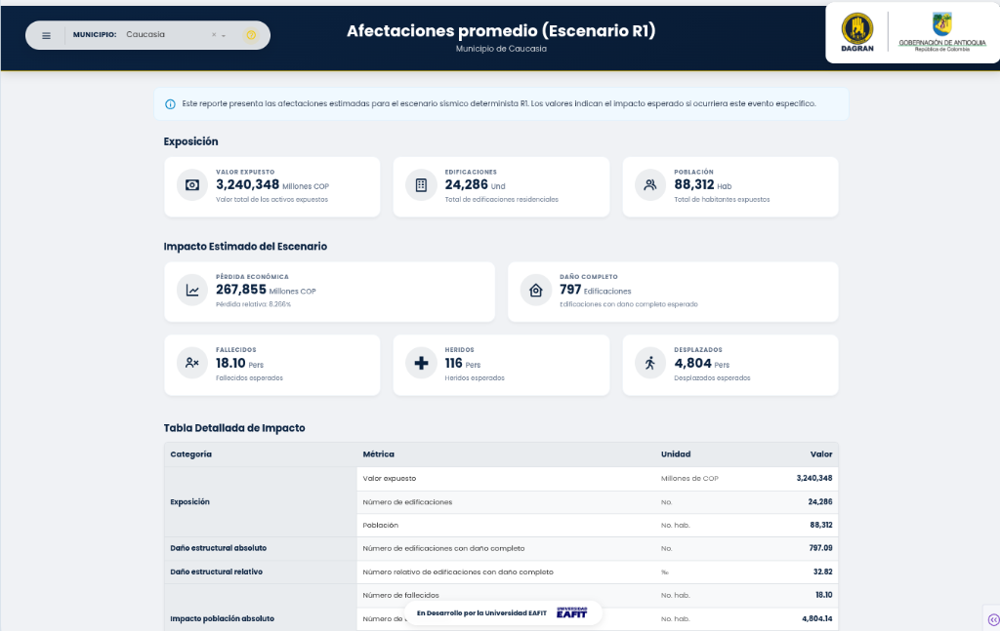
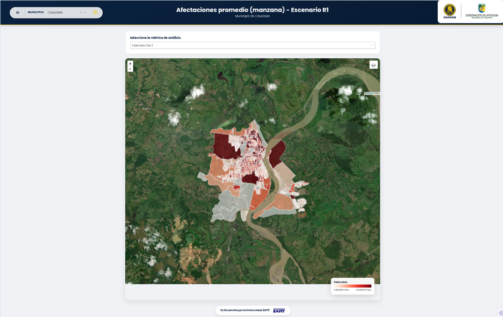

Manual de Usuario
Guía oficial para la navegación e interpretación del Visor Cartográfico de Riesgo Sísmico de Antioquia.
Una plataforma web que permite a técnicos y tomadores de decisiones consultar el riesgo sísmico del departamento, desde el detalle de cada manzana hasta cifras agregadas municipales.
3. Modelo de Exposición
Este módulo responde a la pregunta: ¿Qué hay en el territorio y cuánto vale?
3.1. Mapa Interactivo
Permite colorear las manzanas según diferentes variables usando el selector lateral "Seleccionar variable":
- Variables Generales: Valor de Reposición, Número de Edificios, Ocupantes.
- Pisos: Altura de las edificaciones (1, 2-3, 4-5 pisos, etc.).
- Taxonomía: Tipo de material (Mampostería confinada, Madera, Bahareque, etc.).
3.2. Dashboard de Análisis
Accesible desde el menú "Análisis de la exposición". Ofrece un resumen estadístico completo.

3.3. Detalle de Manzana
Al seleccionar una fila de la tabla de datos, se despliega un panel de detalle que incluye un mapa geográfico de la manzana seleccionada y gráficos específicos de sus características.

4. Evaluación Probabilística
Estima los daños futuros posibles basados en modelos matemáticos de riesgo.
4.1. Curvas de Excedencia
Accesibles en el menú 2.1. Son gráficas que muestran la relación entre la magnitud de un daño y su probabilidad anual.


4.2. Mapas de Calor (Afectaciones)
Disponibles en el menú 2.3como "Afectaciones anuales promedio a nivel de manzana". Muestran geográficamente dónde se espera el mayor impacto acumulado.

5. Escenarios de Riesgo
Este módulo presenta el análisis de consecuencias para escenarios sísmicos específicos (deterministas), como R1 (Sismo Fuerte) y R2 (Sismo Moderado).
5.1. Ubicación del Escenario
Visualice el epicentro sísmico y la propagación de ondas en el mapa regional. Panel lateral incluye controles de capas.

5.2. Afectaciones Promedio (Municipio)
Resumen ejecutivo de los daños esperados a nivel municipal para el escenario seleccionado.

5.3. Afectaciones Promedio (Manzana)
Visualización espacial detallada del impacto distribuido manzana por manzana.

6. Preguntas Frecuentes
¿Qué significa TA_M o MC_M?
- MC_M: Mampostería Confinada (Ladrillo con vigas).
- TA_M: Tapia Pisada (Barro compactado).
- BQ_M: Bahareque (Madera y barro).